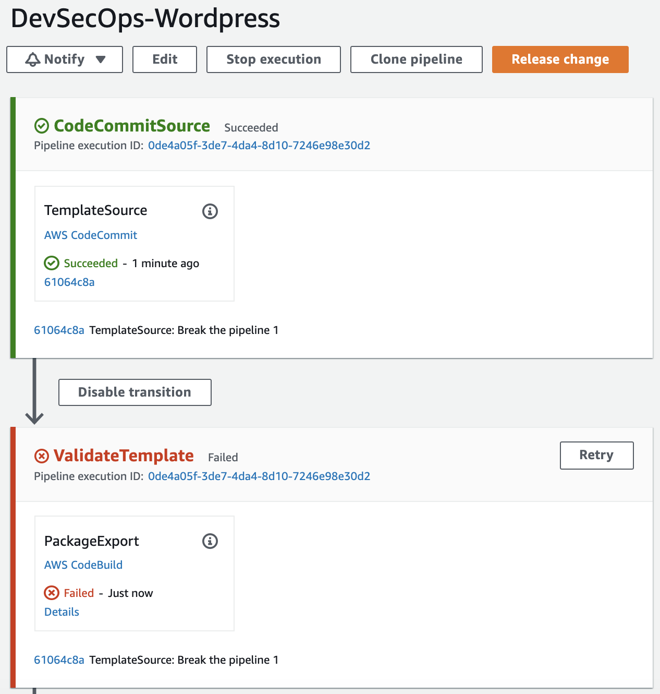
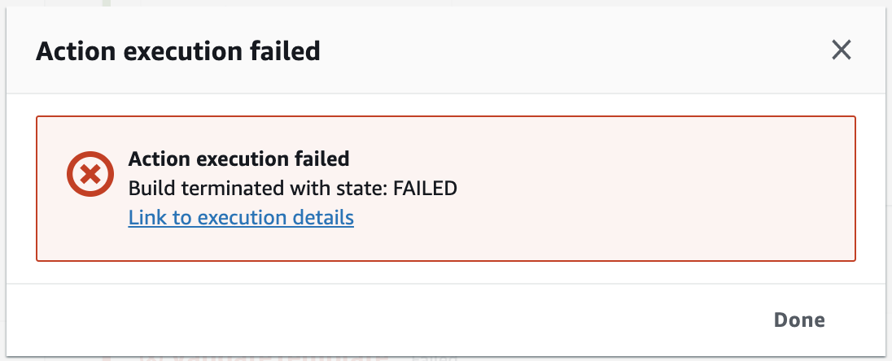
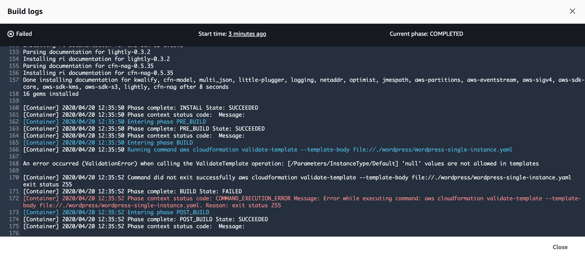

Launch Stacks
Launch the CloudFormation template that creates the Pipeline in your account.

Lets dive into the template file located in ./pipeline/basic-pipeline.yaml. This CloudFormation templates builds a pipeline for a sample WordPress site in a stack. The pipeline is separated into four stages. Each stage must contain at least one action, which is a task the pipeline performs on your artifacts (your input). A stage organizes actions in a pipeline. CodePipeline must complete all actions in a stage before the stage processes new artifacts, for example, if you submitted new input to rerun the pipeline.
The pipeline that performs the following workflow:
-
The first stage of the pipeline retrieves a source artifact (an AWS CloudFormation template) from a repository. You’ll prepare an artifact that includes a sample WordPress template and upload it to an S3 bucket.
-
In the second stage, the pipeline performs a series of validation tests to the AWS CloudFormation template. These include cfn-validate-template, cfn_nag and taskcat, and then the pipeline continues to the next stage.
-
In the third stage, the pipeline creates a test stack and then waits for your approval. After you review the test stack, you can choose to continue with the original pipeline or create and submit another artifact to make changes. If you approve, this stage deletes the test stack, and then the pipeline continues to the next stage.
-
In the fourth stage, the pipeline creates a change set against a production stack, and then waits for your approval. In your initial run, you won’t have a production stack. The change set shows you all of the resources that AWS CloudFormation will create. If you approve, this stage executes the change set and builds your production stack.
Open DevSecOps-Wordpress on the CodePipeline console. It looks something like this:

Why did the stack failed to run? Click on the details button of the Package Export action, and link to the execution details to look at the build logs.


One of the validation tests failed. The output logs the following message:
An error occurred (ValidationError) when calling the ValidateTemplate operation: [/Parameters/InstanceType/Default] 'null' values are not allowed in templates
We are now deploying the template in ./wordpress/wordpress-single-instance.yaml. Can you find the error on the template?